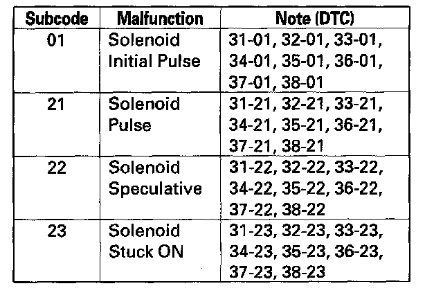

DTC 33-xx
DTC 31-xx*: ABS Right-front Inlet Solenoid Valve MalfunctionDTC 32-xx*: ABS Right-front Outlet Solenoid Valve Malfunction
DTC 33-xx*: ABS Left-front Inlet Solenoid Valve Malfunction
DTC 34-xx*: ABS Left-front Outlet Solenoid Valve Malfunction
DTC 35-xx*: ABS Right-rear Inlet Solenoid Valve Malfunction
DTC 36-xx*: ABS Right-rear Outlet Solenoid Valve Malfunction
DTC 37-xx*: ABS Left-rear Inlet Solenoid Valve Malfunction
DTC 38-xx*: ABS Left-rear Outlet Solenoid Valve Malfunction
*: Subcode
1. Turn the ignition switch ON (II).
2. Clear the DTC with the HDS.
3. Turn the ignition switch OFF, then turn it ON (II) again.
4. Check for DTCs with the HDS.

Is DTC 31-xx, 32-xx, 33-xx, 34-xx, 35-xx, 36-xx, 37-xx, or 38-xx indicated?
YES - Replace the VSA modulator-control unit.
NO - Intermittent failure, the system is OK at this time.